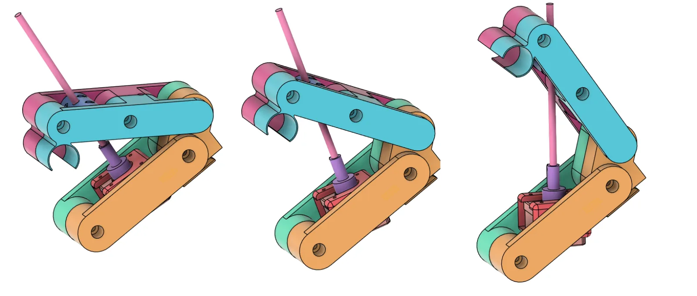
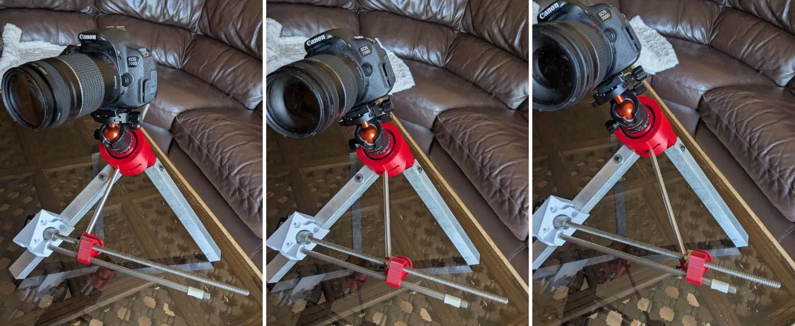
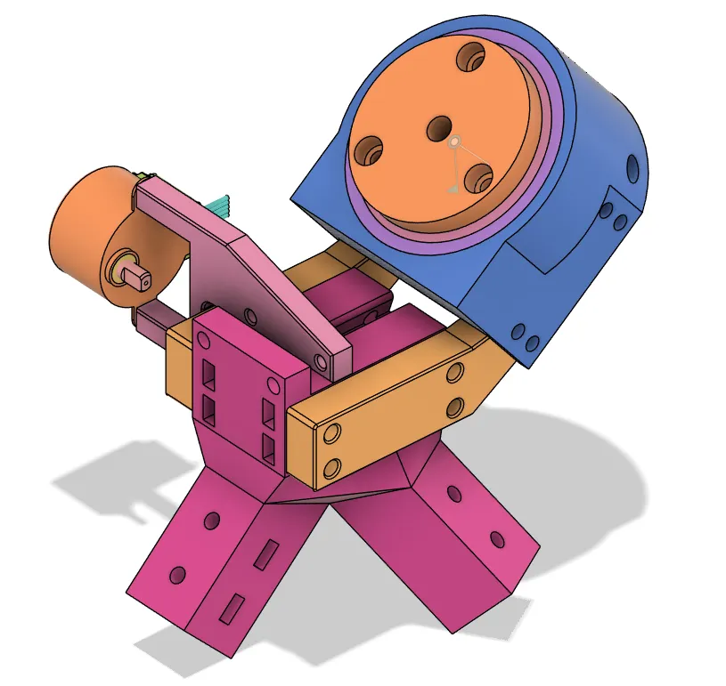

Motivation
I've had a big SCT telescope with a computerized mount for some time now (see my project "Restored Computerized Telescope Mount"), which has excellent performance but is very heavy and takes very long to setup. Moreover, it has a fixed 2000mm focal length, and I wanted to experiment with wider field astrophotography. I needed a star tracker, a small device that makes a camera rotate at a constant speed to compensate for the Earth's rotation. Instead of buying one which is expensive (>200€), I decided to make one, with the additional challenges of keeping the total budget under 50€ and making it fit into a backpack.
Version 1
My first idea relied on the "barn door tracker" architecture, a traditional "DIY" star tracker design that is typically manual, big, and unprecise. It works by controlling the distance between 2 "planks" with a leadscrew. As my version used a precise motor, I didn't need very long planks, so I was able to use precise 3D printed parts.


The main issue was alignment. The axis of the star tracker has to be aligned with the Earth's polar axis. For that reason, the star tracker had to be placed on a tripod. Unfortunately, the only tripod that could fit within the budget was far from sturdy enough.
Version 2
The second version solved the tripod issue by getting rid of it entirely. Instead of relying on a flimsy orientable tripod to orient the star tracker, I chose to make a fixed tripod with the inclination necessary for my latitude. I made it from short aluminum extrusions, which makes it very sturdy, easy to assemble, and very compact, at the cost of flexibility: it can only function within 1-2° of Paris' latitude and has to be placed towards the North.


Version 3
So far, my only fabrication machine was my personal 3D printer. When I got into Polytechnique, I suddenly gained access to a FabLab equipped with a CNC machine. I asked the manager to teach me how to use it, and after 10 hours of training, he gave me permission to use it autonomously, which only a handful of students are allowed to do.
That allowed me to rethink the design entirely, and make a much more compact one using aluminum pieces. This new one gets rid of the "barn door" architecture, opting for a more direct 2-stages reduction drive: first a 4:1 ratio is achieved with a timing belt, then a 64:1 worm drive further reduces speed.

